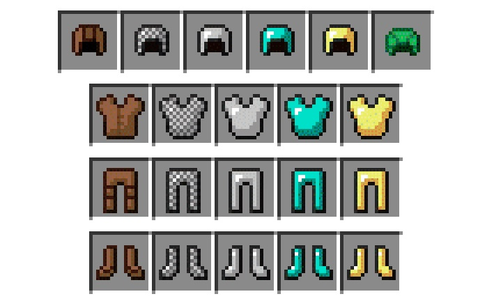
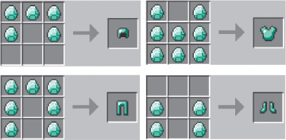
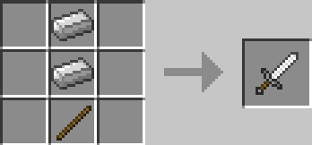
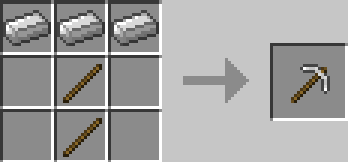
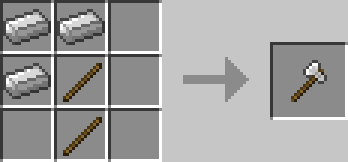

Using materials such as Leather, Iron, Gold, or Diamonds, you can make armour.
Some of these armours can be attained by mobs, but these armours aren't nescessarily needed to survive.
To craft these items, you require a crafting table, in which you can make armour by placing the materials like so.
You now can defend yourself against mobs, but you need to fight back. To make a Sword, you require Wood, Iron, Gold, or Diamonds.
To make a Bow, you need 3 Sticks, and 3 String. To make Arrows for the Bow, you need Flint, Sticks, and Feathers.
But in order to get those items, you need a pickaxe for ores, and an axe to obtain the Wood and Sticks. You also require a Sword for the String.
To craft a Sword, you place the items like so on a Crafting Table
To craft the Pickaxe, you place the items like so on a Crafting Table.
To craft the Axe, you place the items like so on a Crafting Table.
You now know how you can defend yourself, but to do more Damage, you need an Enchanting Table
Each Enchantment only works with specific tools, but these are the categories.
| Enchantment | Effects | Tool Category |
|---|---|---|
| Sharpness | Increases damage. Not compatible with Bane of Arthropods and Smite. | Swords and Axes |
| Bane of Arthopods | Increases damage to Arthopods. Not compatible with Smite and Sharpness. | Swords and Axes |
| Smite | Increases damage to Undead Mobs. Not compatible with Bane of Arthropods and Sharpness. | Swords and Axes |
| Fire Aspect | Sets target on fire. | Sword |
| Knockback | Increases Knockback. | Sword |
| Looting | Increases mob loot. | Sword |
| Sweeping Edge | Increases sweeping attack damage. | Sword |
| Unbreaking | Increases effective durability. | All items |
| Mending | Repairs items with experience. Incompatible with Infinity. | All items |
| Curse of Vanishing | Items destroyed on death. | All items |
| Curse of Binding | Unable to be taken off from armour slots. | All wearable items |
| Efficiency | Increases mining speed. | Pickaxes, Axes, Shovels, and Shears |
| Fortune | Increases certain block drops. Incompatible with Silk Touch. | Pickaxes, Axes, and Shovels |
| Silk Touch | Mined blocks drop their original shape. Incompatible with Fortune. | Pickaxes, Axes, and Shovels |
| Luck of the Sea | Increases fishing luck. | Fishing Rod |
| Lure | Increases fishing rate. | Fishing Rod |
| Power | Increases arrow damage. | Bow |
| Flame | Arrows set target on fire. | Bow |
| Infinity | Shooting doesn't consume any regualr arrows. Incompatible with Mending. | Bow |
| Punch | Increases arrow knockback. | Bow |
| Channeling | Trident "channels" a bolt of lightning towards a hit entity. Functions only during thunderstorms and if target unobstructed with opaque blocks. Incompatible with Riptide. | Trident |
| Impaling | Trident deals additional damage to mobs that spawn naturally in the ocean,as well as players. | Trident |
| Loyalty | Trident returns after being thrown. Higher levels reduce return time. Incompatible with Riptide. | Trident |
| Riptide | Trident launches player with itself when thrown. Functions only in water or rain. Incompatible with Channeling and Loyalty. | Trident |
| Multishot | Shoot 3 arrows at the cost of one. Only one arrow can be recovered. Incompatible with Piercing. | Crossbow |
| Piercing | Arrows pass through multiple entities. Incompatible with Multishot. | Crossbow |
| Quick Charge | Decreases crossbow reloading time. | Crossbow |
| Aqua Affinity | Increases underwater mining rate. | Helmet |
| Respiration | Extends underwater breathing time. | Helmet |
| Blast Protection | Reduces explosion damage and knockback. Incompatible with other protections. | All Armour pieces |
| Fire Protection | Reduces fire damage and burn time. Incompatible with other protections. | All Armour pieces |
| Projectile Protection | Reduces projectile damage. Incompatible with other protections. | All Armour pieces |
| Protection | Reduces most types of damage. Incompatible with other protections. | All Armour pieces |
| Thorns | Damages attackers. | All Armour pieces |
| Frost Walker | Turns water beneath the player into frosted ice. Incompatible with Depth Strider. | Boots |
| Feather Falling | Reduces fall damage. | Boots |
| Depth Strider | Increases underwater movement speed. Incompatible with Frost Walker. | Boots |
Good Job! Now you know how you can defend yourself against Mobs, but since you don't know what a Mob is and isn't. If you want to know, continue.